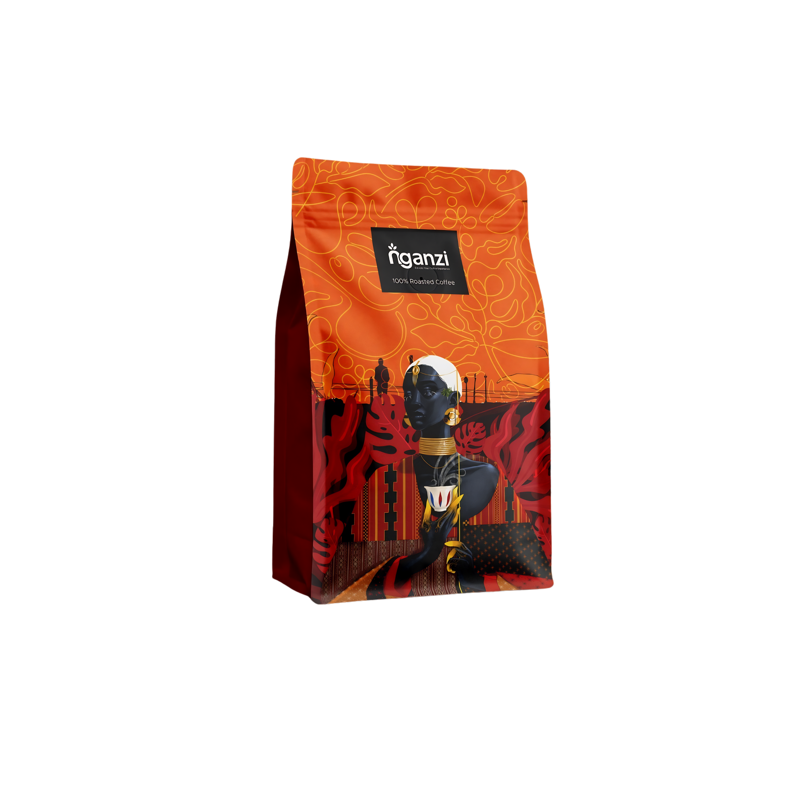

Bright & expressive
Light Roast
A lively roast that preserves the bean’s floral character and fruit-forward acidity. Best for slow mornings, pour-over rituals, and drinkers who enjoy a delicate, layered cup.
Tasting Notes
- Honey
- Red berry
- Jasmine